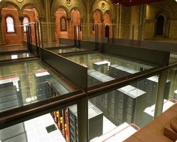
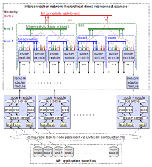

Dr. Denzel and his colleagues at the IBM Zurich and Austin Research Laboratories have built an OMNEST-based simulation framework that is capable of simulating next-generation HPC (High-Performance Computing) systems with hundreds of thousands of interconnected processors. Simulation of such systems is indispensable for evaluating the system design options and to help optimize the performance of the processors, the interconnection network, and eventually the entire system, including software and HPC applications.

"Large-scale end-to-end simulation of HPC systems running benchmark applications on hundreds of thousands of processors communicating across a large interconnection network is a challenge at the same level of detail as is required for system design and development," they write. The system, codenamed MARS, was built on an earlier, also OMNEST-based simulation framework that they originally developed for switch and network simulations in telecom applications. This system allowed the simulation of multistage fat-tree or mesh-type packet-switching networks driven by statistical traffic.
They extended this tool to support end-to-end coverage by replacing the existing statistical packet generators with a new abstract computing node model that is driven by real-world application traces. As the Message Passing Interface (MPI) standard is pervasively used in HPC applications, they used MPI traces to drive the model. These traces were collected from applications of various fields: ocean modeling (HYCOM, POP), weather research and forecast (WRF), shock-wave physics (CTH), and molecular dynamics, fusion and transport physics (AMBER, CPMD, LAMMPS, GYRO, SPPM, SWEEP3D, UMT2K). For another set of applications in the field of weather forecast (DWD, ECMWF T639, ECMWF 4DVar), they used synthesized artificial traces that were generated by application experts.

The power of the framework was made possible in part by OMNEST facilities such as parameterization. For example, the switch module could be configured into the most popular switch architectures by parameterization. The size of the switch, the number and arrangement of logical queues, buffer sizes, scheduling options, the number of virtual circuits and priority classes, port speeds, and the internal speedup and delays are examples of switch parameters.
In simulations accompanying the development of new switches, it is frequently necessary to add new functions or change existing functions. As they wrote, "[this was] flexibly possible because in OMNEST the lowest-level module functions are programmed in C++."
For the simulation of larger HPC systems, the team exploited OMNEST's parallel distributed simulation capability to speed up simulations and to distribute memory requirements to multiple computers. A cluster of SMP machines with the Parallel Operating Environment (POE) of the AIX® operating system was used for parallel simulations. (The simulator can also be run on x86 machines with either Linux or Windows operating system.)
Using the system, the team was able to choose the optimal interconnection network (including the network topology, switch architecture and buffer sizes); evaluate the trade-offs involving the use of indirect routes and adaptive routing; perform GUPS (Giga Updates Per Second) benchmarks on the model; and project the performance of selected existing MPI applications onto the new future supercomputer system.
In a follow-up paper, the team reports on how the MARS simulator was used together with other tools to optimize the interconnection network at the Mare Nostrum supercomputer of Barcelona Supercomputing Center (Top500 link). The goal was to optimize the end-to-end performance with regard to actual application programs running on the system. To accurately model the applications, the team has collected application traces at the message-passing interface level using an instrumentation package, and connected the OMNEST-based network simulator MARS to an MPI task simulator that replays the MPI traces. Both simulators generated output that can be evaluated with a visualization tool. In the paper they also present several examples of results obtained that provide insights that would not have been possible without this integrated environment.
Wolfgang E. Denzel (IBM Zurich Research Laboratory), Jian Li (IBM Austin Research Laboratory), Peter Walker (Open Grid Computing Inc.) and Yuho Jin (Texas A&M University), 2008. "A framework for end-to-end simulation of high-performance computing systems." Simutools '08: Proceedings of the 1st International Conference on Simulation Tools and Techniques for Communications, Networks and Systems & Workshops: 1--10. March 7, 2008, Marseille, France.
Cyriel Minkenberg and German Rodriguez Herrera (IBM Zurich Research Laboratory), 2009. "Trace-driven Co-simulation of High-Performance Computing Systems using OMNeT++." OMNeT++ 2009: Proceedings of the 2nd International Workshop on OMNeT++ (hosted by SIMUTools 2009). March 6, 2009, Rome, Italy.